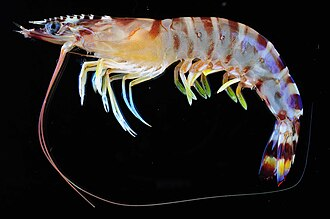

養殖車えびの生産量 都道府県ランキング
全7都道府県の順位と収獲量
養殖車えびの収獲量が全国で最も多いのは沖縄県で、450 tです。全国（1,383 t）の33%を占めます。

| 順位 | 都道府県 | 収獲量 | 全国に占める割合 |
|---|---|---|---|
| 1位 | 沖縄県 | 450 t | 33% |
| 2位 | 鹿児島県 | 303 t | 22% |
| 3位 | 熊本県 | 231 t | 17% |
| 4位 | 長崎県 | 91 t | 6.6% |
| 5位 | 山口県 | 82 t | 5.9% |
| 6位 | 愛媛県 | 10 t | 0.7% |
| 7位 | 徳島県 | 4 t | 0.3% |
PR

養殖車えびの生産量の推移（令和2年〜令和6年）
全国の収獲量は、令和2年の1,369 tから令和6年の1,383 tへ、ほとんど変わっていません。期間中、1位は一貫して沖縄県です。
| 年 | 全国 | 1位 | 2位 | 3位 |
|---|---|---|---|---|
| 令和6年 | 1,383 t | 沖縄県450 t | 鹿児島県303 t | 熊本県231 t |
| 令和5年 | 1,332 t | 沖縄県469 t | 鹿児島県267 t | 熊本県246 t |
| 令和4年 | 1,198 t | 沖縄県372 t | 熊本県248 t | 鹿児島県232 t |
| 令和3年 | 1,253 t | 沖縄県418 t | 鹿児島県258 t | 熊本県245 t |
| 令和2年 | 1,369 t | 沖縄県426 t | 熊本県269 t | 鹿児島県266 t |
この数字について
- 分類：海老の仲間
- 全国の収獲量：1,383 t
- この数字が表すもの：収獲量（養殖による収獲量）
- 調査：海面漁業生産統計調査（海面養殖業） 令和6年
- この品目は養殖の統計です。
- 7県分を調査（調査していない県は順位に入りません）
養殖車えびの生産量について、よくある質問
- 養殖車えびの生産量が日本一の都道府県はどこですか？
- 沖縄県です。海面漁業生産統計調査（海面養殖業）（令和6年）で450 tでした。
- 養殖車えびの生産量ランキング2位・3位はどこですか？
- 2位は鹿児島県（303 t）、3位は熊本県（231 t）です。
- 養殖車えびの生産量ランキング4位・5位はどこですか？
- 4位は長崎県（91 t）、5位は山口県（82 t）です。養殖車えびの全7県の順位は上の表のとおりです。
- 養殖車えびの全国の生産量はどれくらいですか？
- 1,383 t（令和6年）です。